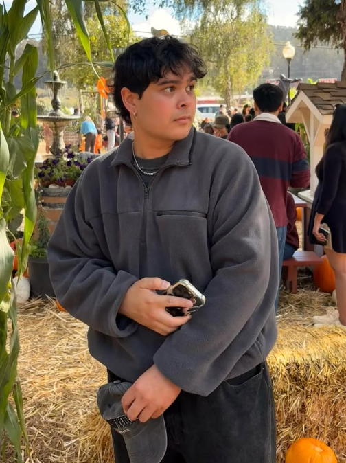

I am a Game Designer based in Fremont, CA. I am a graduate from Cal State East Bay where I graduated with a BFA with a focus on Interaction and Game Design. I went in expecting to focus in art, but I came out almost entirely a coder. I am involved in the process of both the coding and art for games. The main tools I have used previously to create games are Godot and p5js/p5play for the coding and Clip Studio Paint for the art. I have completed projects in both group settings and individually. In the games I've made before, there is a combonation of games where I did all of or most of the art for and games where I have done little to none of the art but all of the coding. As far as my art goes, I have mainly focused on anime styles or very hand drawn looking styles (like in my group game Eldrift). For my coding, although I mainly have worked with GDScript and Javascript, I have experience in coding with Python, C++, and node coding within UE5. I am currently looking for either full employment or an internship for any kind of job involving game design. At the current point in my career I am focusing on coding but I am continuing to work on my art to keep my options open.
